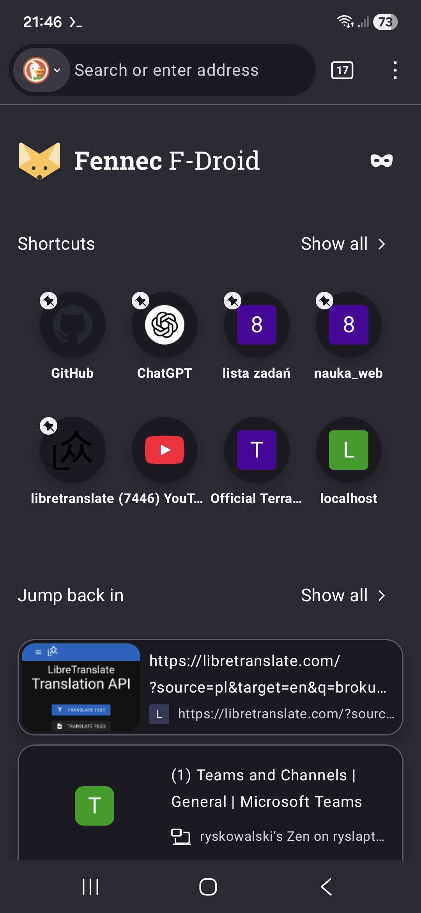
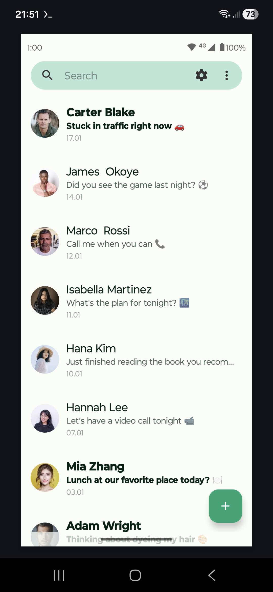
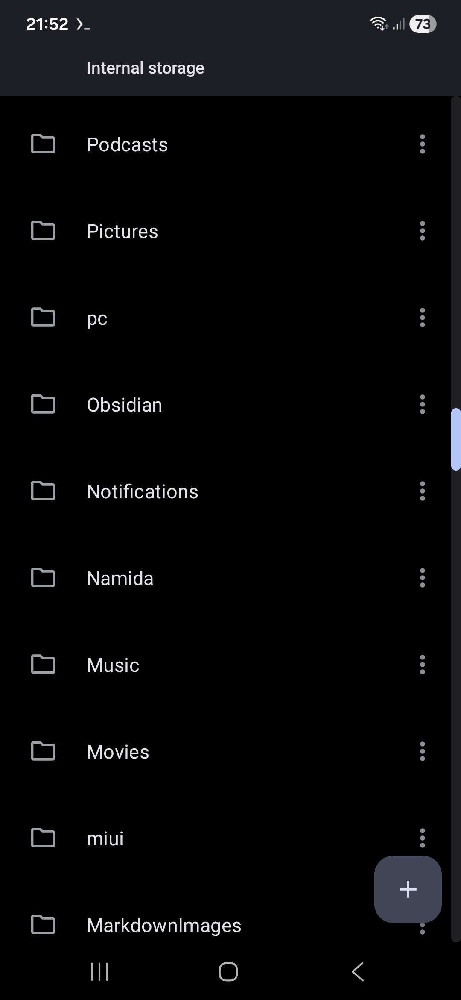

na górę
na dół
Google stara się odebrać możliwość instalowania programów z poza sklepu play, powodując że każdy kto chce stworzyć
aplikację android MUSI podać swoje dane osobowe i zapłacić googlowi.


 Tysiące aplikacji open-source z dnia na dzień przestaną istnieć, powodując że zostaną tylko zaakceptowane przez
google aplikacje z reklamami i śledzeniem użytkowników. Nie będzie się już dało dbać o swoją prywatność i kożystać
z funkcji które przynoszą alternatywne aplikacje.
Tysiące aplikacji open-source z dnia na dzień przestaną istnieć, powodując że zostaną tylko zaakceptowane przez
google aplikacje z reklamami i śledzeniem użytkowników. Nie będzie się już dało dbać o swoją prywatność i kożystać
z funkcji które przynoszą alternatywne aplikacje.


 Gdy korporacyjne aplikacje nie będą miały żadnych alternatyw, będą mogły bez żadnych konsekwencji zamykać
podstawowe funkcje za pay-wallem, dodać wszędzie reklamy, pogorszyć wydajność, aktywnie śledzić wszystko co robi
użytkownik.
Gdy korporacyjne aplikacje nie będą miały żadnych alternatyw, będą mogły bez żadnych konsekwencji zamykać
podstawowe funkcje za pay-wallem, dodać wszędzie reklamy, pogorszyć wydajność, aktywnie śledzić wszystko co robi
użytkownik.